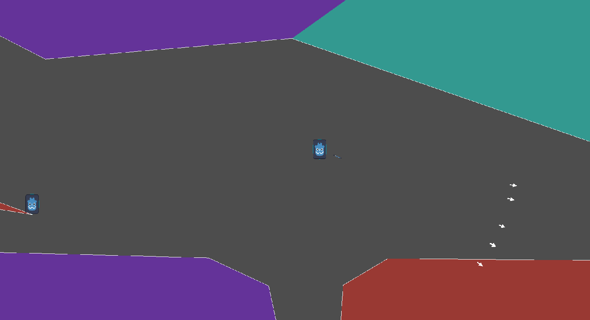
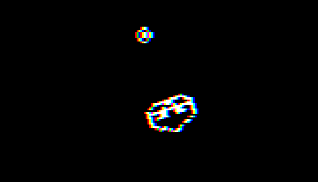
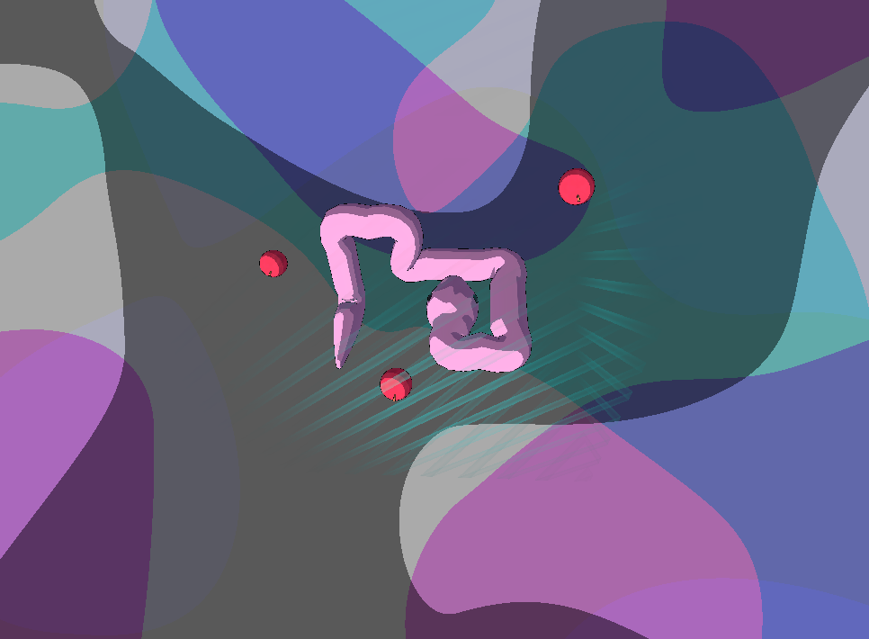
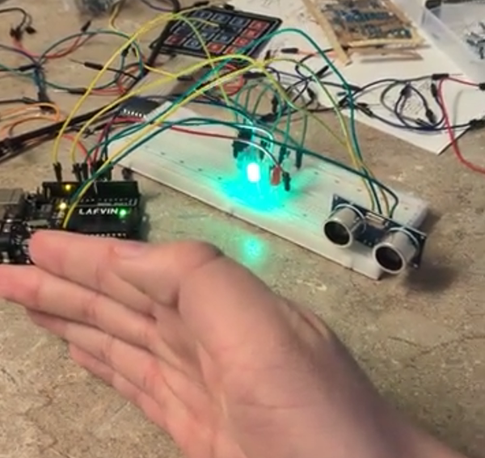

Brigham's Portfolio Portal
Click on the cards below, to view dedicated page about each project.
WIP Projects
Void Directive (temporary title)
2/1/2026 - Present
Video Game

Void Directive is a Metroidvania that I am currently working on, where the main gimmick is that you platform using gun recoil.
Godot .Net 4.6, VSCode, C#, Game Design, Github
Untitled Project
3/24/2026 - Present
Video Game

This game is an mobile, 2d, turn based, arcade style game where you play as a small creature who, on each turn, must dash into food and away from other predators, who dash at the same time as you.
Godot .Net 4.6, VSCode, C#, Game Design, Github
Past Projects
Snek
12/24/2024 - 1/15/2025
Video Game

Snek is a 3d Snake clone that I developed within a couple of weeks. The game is in a playable state and has pleasing visuals, but lacks audio and music.
Godot, GDScript, Game Design
'Slimy Adventure'
1/29/2026 - 4/2/2026
Video Game

Slimy Adventure is a 2D stealth game where the player has to escape a monster farm by avoiding detection from guards and utilizing abilities gained from allies.
Godot .Net 4.5.1, VSCode, C#, Game Design, Team, Github
Distance Detector
4/3/2026
Hardware

The distance detector emits a colored LED on how far the object infront of an ultrasound sensor is from the sensor.
Arduino IDE, C++, Hardware